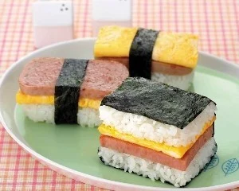

Musubi (午餐肉军舰寿司 / スパムむすび)

Ingredients
Spam, rice, rice vinegar, furikake, seaweed
Optional: eggs, kimchee, cucumber, beets
How to make it
- Cook rice with water (ratio of 1:1, 4 min in instant pot)
- Cut spam to slices and Lightly fry it. It’s salty so don’t use soy or oil
- Fry a few eggs
- Use the spam box to add layers: spam, egg, rice
- Wrap with seaweed
Variations
- Blend rice with beets (steamed or raw) if you want pink colored rice
- Add layer of kimchee or cucumbers
Videos
- Beets and kimchee: https://www.youtube.com/watch?v=UIlN1VWwpRg
- Rice vinegar, furikake, and cucumber: https://www.youtube.com/watch?v=6eGWRLvhL_o